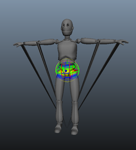
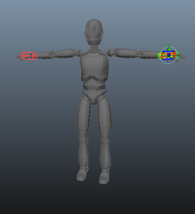
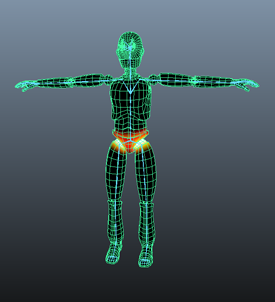

使用交互式蒙皮绑定
- 加载要平滑绑定的角色网格和骨架。
- 选择骨架，选择网格，然后选择“蒙皮 > 绑定蒙皮 > 交互式蒙皮绑定”(Skin > Bind Skin > Interactive Skin Bind) >
 ”。
”。 - 设定所需的任何选项，然后单击“绑定蒙皮”(Bind Skin)。
在该示例中，“最小权重”(Minimum Weight)值设定为 0，这会将操纵器设定为骨骼对象的近似长度，并根据周围的网格为其提供默认的体积。
网格平滑绑定到骨架，并在其中一个选定的关节上显示体积操纵器。
如果在开始绑定时看到锯齿变形，这表示尚未在任何体积操纵器的影响区域中包含顶点的区域。
在上面的示例图像中，指尖和肘部周围的某些顶点尚未包含在内。顶点由于权重值为零而收拢。
增加大小或更改体积操纵器的形状以包含这些顶点后，锯齿瑕疵将消失。
- 开始操纵体积。例如，调整左臂的所有体积。
该阶段的目标是对影响抓取蒙皮的位置有一个大致的了解。
提示：双击“交互式绑定蒙皮工具”(Interactive Bind Skin Tool)按钮 打开“工具设置”(Tool Settings)，然后启用“反射”(Reflection)选项。这使您可以在网格两侧执行对称的工作。
- 切换到绘制权重，以细化网格上的变形。请参见绘制蒙皮权重。 注意：
建议不要在该阶段切换回使用体积操纵器，因为这样将丢失所有已绘制的权重值。